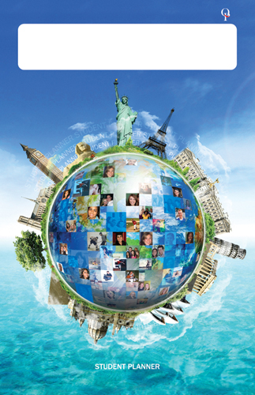

<?xml version="1.0" encoding="UTF-8"?><rss version="2.0"
	xmlns:content="http://purl.org/rss/1.0/modules/content/"
	xmlns:wfw="http://wellformedweb.org/CommentAPI/"
	xmlns:dc="http://purl.org/dc/elements/1.1/"
	xmlns:atom="http://www.w3.org/2005/Atom"
	xmlns:sy="http://purl.org/rss/1.0/modules/syndication/"
	xmlns:slash="http://purl.org/rss/1.0/modules/slash/"
	>

<channel>
	<title>PTSA &#187; Project &amp; Grant Status</title>
	<atom:link href="http://galileoweb.org/ptsa/category/project-grant-status/feed/" rel="self" type="application/rss+xml" />
	<link>http://galileoweb.org/ptsa</link>
	<description>at Galileo Academy</description>
	<lastBuildDate>Wed, 16 Sep 2015 21:55:53 +0000</lastBuildDate>
	<language>en-US</language>
	<sy:updatePeriod>hourly</sy:updatePeriod>
	<sy:updateFrequency>1</sy:updateFrequency>
	
	<item>
		<title>2014-2015 Education Grant Status</title>
		<link>http://galileoweb.org/ptsa/2014/08/25/2014-2015-education-grant-status/</link>
		<comments>http://galileoweb.org/ptsa/2014/08/25/2014-2015-education-grant-status/#comments</comments>
		<pubDate>Tue, 26 Aug 2014 03:13:18 +0000</pubDate>
		<dc:creator><![CDATA[Copernicus]]></dc:creator>
				<category><![CDATA[Project & Grant Status]]></category>

		<guid isPermaLink="false">http://galileoweb.org/ptsa/?p=1465</guid>
		<description><![CDATA[Here is a running list of 2014-2015 Education Grant Status, please feel free to email us for more details at: PTSA-Treasurer@galileoweb.org The Galileo PTSA is pleased to announce funding for the following projects in 2014-2015: 1. Lab tables                                    $6,066.15* 2. Stools          ]]></description>
				<content:encoded><![CDATA[<p>Here is a running list of 2014-2015 Education Grant Status, please feel free to email us for more details at: PTSA-Treasurer@galileoweb.org</p>
<p>The Galileo PTSA is pleased to announce funding for the following projects in 2014-2015:</p>
<p>1. Lab tables                                    $6,066.15*</p>
<p>2. Stools                                           $3,044.11</p>
<p>3. Biochem probeware                 $4,973.69</p>
<p>4. Graphing Calculators              $  552.16*</p>
<p>5. Computer Class equipment     $1,778.96</p>
<p>6. Galileo Planners-                      $500 &#8211;</p>
<p>&nbsp;</p>
<p>Total:  $16,915.07</p>
<p>&nbsp;</p>
<p>* We contributed funding to existing requests made by our teachers on the <a href="http://donorschoose.org/" target="_blank">donorschoose.org</a> website.</p>
<p>These planners were subsidized to provide Galileo students an opportunity to purchase planners for only $1 or to get them for free if they purchase an ASB sticker.</p>
<p><a href="../../../wp-content/uploads/sites/24/2014/08/High-School_H-55.jpg"></a></p>
]]></content:encoded>
			<wfw:commentRss>http://galileoweb.org/ptsa/2014/08/25/2014-2015-education-grant-status/feed/</wfw:commentRss>
		<slash:comments>0</slash:comments>
		</item>
		<item>
		<title>Galileo PTSA Education and Enrichment Grant Awards – 2013-2014</title>
		<link>http://galileoweb.org/ptsa/2014/06/06/galileo-ptsa-education-and-enrichment-grant-awards-2013-2014/</link>
		<comments>http://galileoweb.org/ptsa/2014/06/06/galileo-ptsa-education-and-enrichment-grant-awards-2013-2014/#comments</comments>
		<pubDate>Fri, 06 Jun 2014 18:07:55 +0000</pubDate>
		<dc:creator><![CDATA[Mr. Jung]]></dc:creator>
				<category><![CDATA[Project & Grant Status]]></category>

		<guid isPermaLink="false">http://galileoweb.org/ptsa/?p=1444</guid>
		<description><![CDATA[Thanks to the generous donations toward the Galileo PTSA Education Fund Drive, we have been able to award the following grants totaling $5,118.44. Eugene Wing, ASB Advisor Registration for CADA Leadership Conference &#8211; $500 39 Student leaders attended this annual Student Leadership Conference sponsored by CADA, California Association for Director of Activities. Paul Matsumoto, Chemistry Teacher Purchase of a Milligram]]></description>
				<content:encoded><![CDATA[<p>
Thanks to the generous donations toward the Galileo PTSA Education Fund<br />
Drive, we have been able to award the following grants totaling $5,118.44. </p>
<p>Eugene Wing, ASB Advisor<br />
Registration for CADA Leadership Conference &#8211; $500 </p>
<p>39 Student leaders attended this annual Student Leadership Conference<br />
sponsored by CADA, California Association for Director of Activities. </p>
<p>Paul Matsumoto, Chemistry Teacher<br />
Purchase of a Milligram Precision Electronic Balance &#8211; $437.66 </p>
<p>This equipment will be used for various chemistry laboratory activities. Other science teachers<br />
will also have access to this balance. </p>
<p>Stan DeBella, Biotech Academy Lead Teacher<br />
Purchase of Biotechnology supplies &#8211; $488.84 </p>
<p>Purchase of consumable supplies of gloves used in classroom activities involving Genetics and<br />
DNA, Proteins and Immunology. </p>
<p>Naomi Forsberg, Wellness Center Community Health Outreach Worker<br />
Nail Art Club &#8211; $153.35 </p>
<p>Purchase of nail art supplies and equipment. This club gives students a safe place to talk, develop<br />
healthy relationships with peers and adults, and relieve stress helping to foster students’ self<br />
esteem, creativity and discovery of new artistic talents. </p>
<p>Jessica Colvin, Wellness Center Coordinator<br />
Wellness Program Incentives &#8211; $294.36 </p>
<p>Purchase of incentives (prizes) for students to participate fully in the annual school wide health<br />
awareness event focusing on: Mental Health Awareness, Sexual Health Awareness, Nutrition and<br />
Substance Abuse Prevention. </p>
<p>Bai Zhen and Serena Chan, College Counselors<br />
College Night and Financial Aid FAFSA workshops &#8211; $422.23 </p>
<p>Purchase of snacks and drinks for two 3-4 hour long evening workshops given to approximately<br />
200 parents and students on “Road to College” and “FAFSA”, applying for student loans,<br />
scholarships, gift aids and more. </p>
<p>Doug Page. Mathematics Department Chair<br />
Purchase of Teacher Pack (10 calculators) Texas Instruments-TI-84 Plus C Silver EZ-Spot<br />
Graphing Calculators &#8211; $1,237 </p>
<p>With the move to Common Core State Standards for Math, graphing calculators will be needed<br />
by students in the lower level classes. Math teachers will share the use of these calculators in all<br />
math level classes .<br />
Curtis Chin, Science Teacher<br />
Purchase of AP Biology Review books &#8211; $498.24 </p>
<p>These Biology Review books are for classroom use to help prepare students for the AP Biology<br />
Exams, and will be a resource for the next 5-10 years. </p>
<p>Mirjam Krohne, Teacher<br />
Wellness-After School Girl’s Club-Movement &#8211; $111.16 </p>
<p>Purchase of scrapbook and Year End Pizza party for participants in this Movement<br />
Class with support from Wellness Center and Futurama. </p>
<p>Kristy Morrison, English Teacher<br />
Creative Writing Books &#8211; $500 </p>
<p>Funds to publish “Students’ Creative Writings” for students in her 10th, 11th and 12th grade<br />
Creative Writing Classes including short stories, poems and prose. Each student has their own<br />
personal copy of their hard work and reflects Galileo’s diverse student community. Copies may<br />
be found in the Galileo Library. </p>
<p>Alicia Sheppeck, World Language Department Head<br />
Spanish Readers &#8211; $475.60 </p>
<p>Purchase of 2 classroom sets of Spanish Readers, 4 corresponding audio CDs and 2 Activity<br />
Masters for Spanish classes to improve students’ reading levels, writing and spoken vocabulary. </p>
]]></content:encoded>
			<wfw:commentRss>http://galileoweb.org/ptsa/2014/06/06/galileo-ptsa-education-and-enrichment-grant-awards-2013-2014/feed/</wfw:commentRss>
		<slash:comments>0</slash:comments>
		</item>
		<item>
		<title>Galileo PTSA Education and Enrichment Grant Awards 2012-13</title>
		<link>http://galileoweb.org/ptsa/2013/06/30/galileo-ptsa-education-and-enrichment-grant-awards-2012-2013/</link>
		<comments>http://galileoweb.org/ptsa/2013/06/30/galileo-ptsa-education-and-enrichment-grant-awards-2012-2013/#comments</comments>
		<pubDate>Sun, 30 Jun 2013 22:40:04 +0000</pubDate>
		<dc:creator><![CDATA[Mr. Jung]]></dc:creator>
				<category><![CDATA[Project & Grant Status]]></category>

		<guid isPermaLink="false">http://galileoweb.org/ptsa/?p=1271</guid>
		<description><![CDATA[This year we  awarded 8 grants totaling $4,150.   Allison Wagner: English Teacher 2 class sets of The Alchemist  &#8211; $500 This grant will help towards funding the purchase of two class sets of The Alchemist by Brazilian author Paulo Coelho for Ms. Wagner’s 10th grade World Literature classes. The books will be used for two classes for several years.]]></description>
				<content:encoded><![CDATA[<p><b>This year we  awarded 8 grants totaling $4,150.</b></p>
<p><b> </b></p>
<p><b>Allison Wagner: English Teacher</b></p>
<p><b><i>2 class sets of <span style="text-decoration: underline">The Alchemist</span>  &#8211; $500</i></b></p>
<p>This grant will help towards funding the purchase of two class sets of The Alchemist by Brazilian author Paulo Coelho for Ms. Wagner’s 10<sup>th</sup> grade World Literature classes. The books will be used for two classes for several years.</p>
<p>&nbsp;</p>
<p><b>Daniel Grimm: Chemistry Teacher Lab supplies</b></p>
<p><b><i>Chemistry  Lab Supplies &#8211; $500</i></b></p>
<p>This grant will help towards the purchase of Chemistry Lab supplies as there was no budget for any lab supplies in the 2012-2013 school budget.</p>
<p>&nbsp;</p>
<p><b>Bai Zhen: College Counselor</b></p>
<p><b><i>Road to College Workshop, February 2013 &#8211; $300</i></b></p>
<p>This grant will be used to buy the food for the dinner provided during this evening college workshop. Information is provided for seniors and their parents in one session and all other grades in another. This workshop has become an essential part of the Galileo College Counseling program. Many parents would be deterred from coming to a 2.5 hour workshop after work, if food were not provided.</p>
<p>&nbsp;</p>
<p><b>Robotics Club/David Barrios: Physics teacher/Sponsor</b></p>
<p><b><i>Robotics Club participation in the FIRST Robotics competition &#8211; $500</i></b></p>
<p>This grant was to be used towards the purchase of supplies for the competition and for some of the hotel and food costs for the approximately 30 Robotics Club student members who will be attending the event held at UC Davis.</p>
<p>&nbsp;</p>
<p><b>Lillian Giles: English Teacher</b></p>
<p><b><i>Class Set of <span style="text-decoration: underline">The Wild Seed</span> &#8211; $500</i></b></p>
<p>The grant will help purchase a class set of  <span style="text-decoration: underline">The Wild Seed</span> by Octavia Butler to be used by 2 sections of 11<sup>th</sup> Grade American Literature for several years.</p>
<p>&nbsp;</p>
<p><b>Cassandra Gamm: Physics Teacher</b></p>
<p><b><i>7 Vernier Labquests &#8211; $1286  (as approved by the PTSA at a General meeting)</i></b></p>
<p>This grant was matched by the Galileo Alumni Committee and aided in the purchase of 7 Labquest sensors and a charger for the Science department.  Currently adopted by the Physics teachers, these instruments help take/make measurements of many kinds and are useful not only in teaching the material of the course but in preparing students to use such equipment when they go on to college. This will make it possible for more than one teacher to use a set at a time and the possibility of more availability for students to use first hand and not only in large groups. The sensors will be used for many classes for many years.</p>
<p>&nbsp;</p>
<p><b>Eugene Wing: ASB Advisor</b></p>
<p><b><i>Student Handbook Folders &#8211; $500</i></b></p>
<p>This grant will help towards funding the printing of the Galileo student handbook/folder which provides information about graduation requirements, attendance policy, citizenship policy, directory, clubs, school song and yells and campus map.</p>
<p>&nbsp;</p>
<p><b>Curtis Chinn: Biology Teacher</b></p>
<p><b><i>USA Biology Olympiad &#8211; $75</i></b></p>
<p>This grant will help pay for the registration fee for 11<sup>th</sup> and 12<sup>th</sup> grader’s to participate in the initial rounds of the Olympiad held on campus. Eventual winners would continue on to the national competition at Purdue University.</p>
<p>&nbsp;</p>
]]></content:encoded>
			<wfw:commentRss>http://galileoweb.org/ptsa/2013/06/30/galileo-ptsa-education-and-enrichment-grant-awards-2012-2013/feed/</wfw:commentRss>
		<slash:comments>0</slash:comments>
		</item>
		<item>
		<title>Galileo PTSA Education and Enrichment Grant Awards — 2011-2012</title>
		<link>http://galileoweb.org/ptsa/2012/09/18/galileo-ptsa-education-and-enrichment-grant-awards-2011-2012/</link>
		<comments>http://galileoweb.org/ptsa/2012/09/18/galileo-ptsa-education-and-enrichment-grant-awards-2011-2012/#comments</comments>
		<pubDate>Wed, 19 Sep 2012 06:00:08 +0000</pubDate>
		<dc:creator><![CDATA[Mr. Jung]]></dc:creator>
				<category><![CDATA[Project & Grant Status]]></category>

		<guid isPermaLink="false">http://galileoweb.org/ptsa/?p=978</guid>
		<description><![CDATA[Galileo PTSA Education and Enrichment Grant Awards — 2011-2012 This year we awarded 10 grants totaling $4,501.35. &#160; Eugene Wing: ASB Advisor Student Handbooks for academic year 2012-2013 &#8212; $500 This grant will help towards funding Galileo student handbook folders which provide information about graduation requirements, attendance policy, citizenship policy, directory, clubs, school song and yells and campus map. Cecelia]]></description>
				<content:encoded><![CDATA[<p><strong>Galileo PTSA Education and Enrichment Grant Awards — 2011-2012</strong></p>
<p><strong>This year we awarded 10 grants totaling $4,501.35.</strong></p>
<p>&nbsp;</p>
<p><strong>Eugene Wing: ASB Advisor</strong><br />
<strong><em>Student Handbooks for academic year 2012-2013 &#8212; $500</em></strong><br />
This grant will help towards funding Galileo student handbook folders which provide information about graduation requirements, attendance policy, citizenship policy, directory, clubs, school song and yells and campus map.</p>
<p><strong>Cecelia Chan: Counseling Department </strong><br />
<strong><em>Commencement programs for the 2012 graduation &#8212; $500</em></strong><br />
This grant will help towards the cost of commencement programs for the 2012 graduation.</p>
<p><strong>Lauren Marshman: Counseling Department</strong><br />
<strong><em>Top scholar Medallions for Graduation 2012 &#8212; $500</em></strong><br />
The top Scholars are given their awards at the Move Up Assembly and are introduced on stage. This inspires other students to do well during their four years at Galileo.</p>
<p><strong>Andrew Tsao: Student</strong><br />
<strong><em>Eagle Scout Gardening Project &#8212; $400</em></strong><br />
This grant was to be used to build three flower boxes and plant plants on the Van Ness side of school and the Courtyard. The gardening club is going to be responsible for the upkeep of the planted areas.</p>
<p><strong>Paul Matsumoto: Chemistry Teacher</strong><br />
<strong><em>Probeware for Chem Lab for Honors and AP Chem &#8212; $401.35</em></strong><br />
This grant was to purchase additional probeware for the Chem lab due to rising class size. This will reduce the number of students in each group using the probes.</p>
<p><strong>Jessica Colvin: Wellness Coordinator</strong><br />
<strong><em>Incentives for Wellness Program Events &#8212; $500</em></strong><strong></strong><br />
The Wellness center provided services to 795 students last year and connected with hundreds of others through events, drop in activities and support. This grant will be used to purchase incentives to encourage students to participate in Wellness activities. As well as being used for supplies for the Wellness Drop In Center some supplies will be used in grief and loss support groups.</p>
<p><strong>Eugene Wing: ASB Advisor</strong><br />
<strong><em>Student Handbook Folders &#8212; $500</em></strong><br />
This grant will help towards funding Galileo student handbook folders which provide information about graduation requirements, attendance policy, citizenship policy, directory, clubs, school song and yells and campus map.</p>
<p><strong>Casey Gold: Community Health Outreach Worker</strong><br />
<strong><em>Wellness Youth Outreach Worker (YOW) &#8212; $200</em></strong><br />
This grant will pay for the YOW group to participate in a Camping in the Presidio (CAP) program which will act as an enriching experience and a team building experience  which will in turn empower them to help the Galileo community.</p>
<p><strong>Michael Roman, English teacher</strong><br />
<strong><em>Renaissance Fair — $500</em></strong><br />
To help pay for the entrance fees for 50 students to go to the Renaissance Fair. Mr. Roman has been taking senior students to the fair for the last five years but lost his funding this year so asked for PTSA help. The students will see plays and be submersed into the life and culture of the Renaissance Era in preparation for studying the works of Shakespeare.</p>
<p><strong>Eugene Wing; ASB Advisor</strong><br />
<strong><em>Welcome Assembly Speaker &#8212; $500</em></strong><br />
This will help to fund the motivational speaker, Brodie Kaster, to speak at the welcome assembly. The goal is to motivate students by embracing diversity, encourage them to chase their dreams and make an impact on the school and community. The speaker will attend two assemblies and a leadership workshop for ASB class and club officers.<em></em></p>
]]></content:encoded>
			<wfw:commentRss>http://galileoweb.org/ptsa/2012/09/18/galileo-ptsa-education-and-enrichment-grant-awards-2011-2012/feed/</wfw:commentRss>
		<slash:comments>1</slash:comments>
		</item>
		<item>
		<title>Galileo PTSA Education and Enrichment Grant Awards &#8212; 2010-2011</title>
		<link>http://galileoweb.org/ptsa/2011/06/07/galileo-ptsa-education-and-enrichment-grant-awards-2010-2011/</link>
		<comments>http://galileoweb.org/ptsa/2011/06/07/galileo-ptsa-education-and-enrichment-grant-awards-2010-2011/#comments</comments>
		<pubDate>Tue, 07 Jun 2011 21:00:16 +0000</pubDate>
		<dc:creator><![CDATA[Mr. Jung]]></dc:creator>
				<category><![CDATA[Project & Grant Status]]></category>

		<guid isPermaLink="false">http://galileoweb.org/ptsa/?p=677</guid>
		<description><![CDATA[Since school started we have awarded 11 grants to Galileo faculty.  Grants are funded from the Galileo Ed Fund.  Here’s what has been funded. Ben Chun: Teacher AP Computer Science Exam Prep Materials &#8211;$125 This grant is to fund AP exam review materials. Bai Zhen: AACE College Counselor Financial Aid Workshop &#8212; $210 This grant is to fund food for]]></description>
				<content:encoded><![CDATA[<p>Since school started we have awarded 11 grants to Galileo faculty.  Grants are funded from the Galileo Ed Fund.  Here’s what has been funded.</p>
<p><strong>Ben Chun: Teacher</strong><em> </em><br />
<em>AP Computer Science Exam Prep Materials &#8211;$125</em><br />
This grant is to fund AP exam review materials.</p>
<p><strong>Bai Zhen: AACE College Counselor</strong><br />
<em>Financial Aid Workshop &#8212; $210</em><br />
This grant is to fund food for the students and parents attending the financial aid workshop that Mr. Zhen is putting on January 26, 2011.</p>
<p><strong>Mirjam Krohne: Special Education</strong><br />
<em>Nutrition Grant &#8212; $300</em><br />
This grant will be used to buy, compose and create meals based on the food pyramid and following the government’s dietary guidelines. It will also be used to provide healthy snacks throughout the year. Ms Krohne has  found that this nutrition program helps instill healthy eating habits in many of her students.</p>
<p><strong>Richard McDowell: Science Teacher and Galileo Health Academy Coordinator</strong><br />
<em>Health Academy &#8212; Emergency Medical Technician Program &#8212; $481.86</em><br />
This grant will be used to buy replacement equipment for the emergency childbirth training done as part of the Emergency Medical Technician course.  This course is done by all Seniors who are enrolled in the Health Academy and the emergency childbirth training is the most engaging and inspiring hands on activity that these students participate in.</p>
<p><strong>Karen Field: Teacher in the Academy of Hospitality and Tourism</strong><br />
<em>Green Business Fundraising &#8212; $171.55</em><br />
The Senior and Junior AoHT students sell lunches to teachers every Friday as part of their fundraising efforts. This grant will be used to buy plate covers so that these lunches can be kept warm on the way to being delivered.</p>
<p><strong>Joseph Taylor: Stage Crew Director, visual and Performing Arts Dept.</strong><br />
<em>Stage Crew  &#8212; $122.82</em><br />
This grant will be used to purchase T-shirts for Galileo’s stage crew so that they are more easily recognizable on stage. The stage crew provides its valuable services at more than 40 assemblies and performances each year.</p>
<p><strong>Eugene Wing, Associated Student Body ( ASB) advisor</strong><em> </em><br />
<em>Leadership Conference &#8212; $500</em><br />
To help offset the cost of taking 40 students to a Leadership Conference.  These student leaders (ASB officers, class officers, club presidents and potential freshman leaders) will take leadership workshops and be involved in activities that promote involvement in student government, clubs and sports.</p>
<p><strong>Michael Roman, English teacher</strong><br />
<em>Renaissance Fair &#8212; $500</em><br />
To help pay for the entrance fees for 50 students to go to the Renaissance Fair.  Mr. Roman has been taking Senior students to the fair for the last five years but lost his funding this year so asked for PTSA help. The students will see plays and be submersed into the life and culture of the Renaissance Era in preparation for studying the works of Shakespeare.</p>
<p><strong>Paul Matsumoto, Chemistry &amp; Physics teacher, </strong><br />
<em>Physics Lab Supply &#8212; $339.92</em><br />
This grant is to purchase a power amp which will aid in developing various Physics Lab activities and a portable sound system for use in the class.</p>
<p><em>Chemistry Visualization Software&#8211; $296.68</em><br />
This software will provide an interactive environment for learning and exploration.</p>
<p><strong>Jessica Colvin, Wellness Coordinator, </strong><br />
<em>Healthy Food / Snacks and Incentives &#8211;$500</em><br />
This will be used to purchase healthy food/ snacks and incentives for students who participate in Wellness programming.  One of the most effective ways that the Wellness counselors have found to outreach to students and bring them in is through different incentives, including food.   Again the center previously got funding from elsewhere but lost that funding this year so she asked the PTSA for help.</p>
<p>&nbsp;</p>
]]></content:encoded>
			<wfw:commentRss>http://galileoweb.org/ptsa/2011/06/07/galileo-ptsa-education-and-enrichment-grant-awards-2010-2011/feed/</wfw:commentRss>
		<slash:comments>0</slash:comments>
		</item>
	</channel>
</rss>
